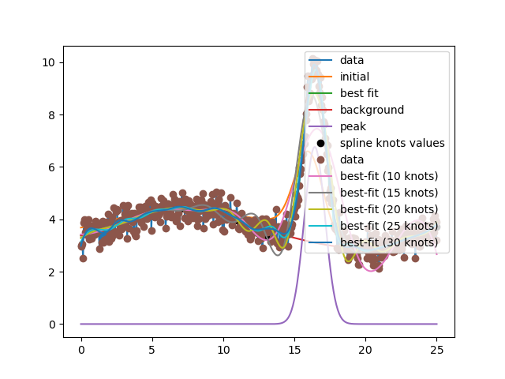

Note
Go to the end to download the full example code
doc_builtinmodels_splinemodel.py¶
[[Model]]
(Model(gaussian, prefix='peak_') + Model(spline_model, prefix='bkg_'))
[[Fit Statistics]]
# fitting method = leastsq
# function evals = 92
# data points = 501
# variables = 14
chi-square = 52.6611549
reduced chi-square = 0.10813379
Akaike info crit = -1100.61674
Bayesian info crit = -1041.58425
R-squared = 0.94690612
[[Variables]]
peak_amplitude: 12.2231138 +/- 0.29554074 (2.42%) (init = 8)
peak_center: 16.4280869 +/- 0.01091050 (0.07%) (init = 16)
peak_sigma: 0.72096402 +/- 0.01336666 (1.85%) (init = 1)
peak_fwhm: 1.69774050 +/- 0.03147609 (1.85%) == '2.3548200*peak_sigma'
peak_height: 6.76360675 +/- 0.09854036 (1.46%) == '0.3989423*peak_amplitude/max(1e-15, peak_sigma)'
bkg_s0: 3.51175736 +/- 0.04941392 (1.41%) (init = 3.787995)
bkg_s1: 3.72930068 +/- 0.09558236 (2.56%) (init = 3.959487)
bkg_s2: 4.26846495 +/- 0.12650286 (2.96%) (init = 4.384009)
bkg_s3: 4.42375491 +/- 0.10170203 (2.30%) (init = 4.431971)
bkg_s4: 4.49590447 +/- 0.10615551 (2.36%) (init = 4.243976)
bkg_s5: 3.96515316 +/- 0.09336554 (2.35%) (init = 4.115153)
bkg_s6: 3.35531898 +/- 0.12669983 (3.78%) (init = 3.965325)
bkg_s7: 2.89909737 +/- 0.16190201 (5.58%) (init = 2.788437)
bkg_s8: 2.82656972 +/- 0.13445491 (4.76%) (init = 2.984317)
bkg_s9: 3.43338674 +/- 0.15987280 (4.66%) (init = 3.383491)
bkg_s10: 3.73024845 +/- 0.12096864 (3.24%) (init = 3.791937)
[[Correlations]] (unreported correlations are < 0.300)
C(bkg_s7, bkg_s8) = -0.8192
C(peak_amplitude, peak_sigma) = +0.7987
C(bkg_s8, bkg_s9) = -0.7063
C(bkg_s5, bkg_s6) = -0.6950
C(peak_amplitude, bkg_s7) = -0.6878
C(bkg_s2, bkg_s3) = -0.6672
C(bkg_s9, bkg_s10) = -0.6060
C(bkg_s3, bkg_s4) = -0.5743
C(bkg_s1, bkg_s2) = -0.5646
C(bkg_s4, bkg_s5) = -0.5542
C(bkg_s7, bkg_s9) = +0.5216
C(peak_sigma, bkg_s7) = -0.5192
C(peak_amplitude, bkg_s8) = +0.5185
C(bkg_s0, bkg_s1) = +0.4448
C(peak_sigma, bkg_s8) = +0.3733
C(peak_center, bkg_s6) = +0.3599
C(bkg_s4, bkg_s6) = +0.3597
C(bkg_s0, bkg_s2) = -0.3595
C(bkg_s2, bkg_s4) = +0.3504
C(bkg_s8, bkg_s10) = +0.3455
C(bkg_s6, bkg_s7) = -0.3332
C(peak_center, bkg_s7) = -0.3301
C(peak_amplitude, bkg_s9) = -0.3206
# <examples/doc_builtinmodels_splinemodel.py>
import matplotlib.pyplot as plt
import numpy as np
from lmfit.models import GaussianModel, SplineModel
data = np.loadtxt('test_splinepeak.dat')
x = data[:, 0]
y = data[:, 1]
plt.plot(x, y, label='data')
model = GaussianModel(prefix='peak_')
params = model.make_params(amplitude=dict(value=8, min=0),
center=dict(value=16, min=5, max=25),
sigma=dict(value=1, min=0))
# make a background spline with knots evenly spaced over the background,
# but sort of skipping over where the peak is
knot_xvals3 = np.array([1, 3, 5, 7, 9, 11, 13, 15, 17, 19, 21, 23, 25])
knot_xvals2 = np.array([1, 3, 5, 7, 9, 11, 13, 16, 19, 21, 23, 25]) # noqa: E241
knot_xvals1 = np.array([1, 3, 5, 7, 9, 11, 13, 19, 21, 23, 25]) # noqa: E241
bkg = SplineModel(prefix='bkg_', xknots=knot_xvals1)
params.update(bkg.guess(y, x))
model = model + bkg
plt.plot(x, model.eval(params, x=x), label='initial')
out = model.fit(y, params, x=x)
print(out.fit_report(min_correl=0.3))
comps = out.eval_components()
plt.plot(x, out.best_fit, label='best fit')
plt.plot(x, comps['bkg_'], label='background')
plt.plot(x, comps['peak_'], label='peak')
knot_yvals = np.array([o.value for o in out.params.values() if o.name.startswith('bkg')])
plt.plot(knot_xvals1, knot_yvals, 'o', color='black', label='spline knots values')
plt.legend()
plt.show()
# knot positions | peak amplitude
# 11, 13, 19, 21 | 12.223 0.295
# 11, 13, 16, 19, 21 | 11.746 0.594
# 11, 13, 15, 17, 19, 21 | 12.052 0.872
plt.plot(x, y, 'o', label='data')
for nknots in (10, 15, 20, 25, 30):
model = SplineModel(prefix='bkg_', xknots=np.linspace(0, 25, nknots))
params = model.guess(y, x)
out = model.fit(y, params, x=x)
plt.plot(x, out.best_fit, label=f'best-fit ({nknots} knots)')
plt.legend()
plt.show()
# <end examples/doc_builtinmodels_splinemodel.py>
Total running time of the script: ( 0 minutes 0.297 seconds)